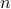
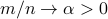
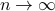

|
Leo Miolane (INRIA)
Apr 30.
Title and Abstract
Phase transitions in generalized linear models
We consider generalized linear models (GLMs) where an unknown -dimensional signal vector is observed through the application of a random matrix and a non-linear (possibly probabilistic) componentwise output function.
We study the models in the high-dimensional limit, where the observation consists of points, and  as . This situation is ubiquitous in applications ranging from supervised machine learning to signal processing.
We will analyze the model-case when the observation matrix has i.i.d. elements and the components of the ground-truth signal are taken independently from some known distribution.
We will compute the limit of the mutual information between the signal and the observations in the large system limit. This quantity is particularly interesting because it is related to the free energy (i.e. the logarithm of the partition function) of the posterior distribution of the signal given the observations. Therefore, the study of the asymptotic mutual information allows to deduce the limit of important quantities such as the minimum mean squared error for the estimation of the signal.
We will observe some phase transition phenomena. Depending on the noise level, the distribution of the signal and the non-linear function of the GLM we may encounter various scenarios where it may be impossible hard (only with exponential-time algorithms) easy (with polynomial-time algorithms) to recover the signal.
Bio
Leo Miolane is a PhD student at Inria and Ecole Normale Superieure in Paris, supervised by Marc Lelarge. He is interested in high-dimensionnal statistics and phase transition phenomena
|